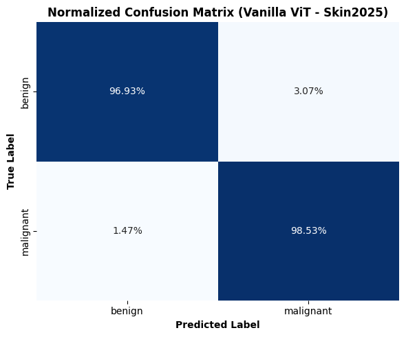
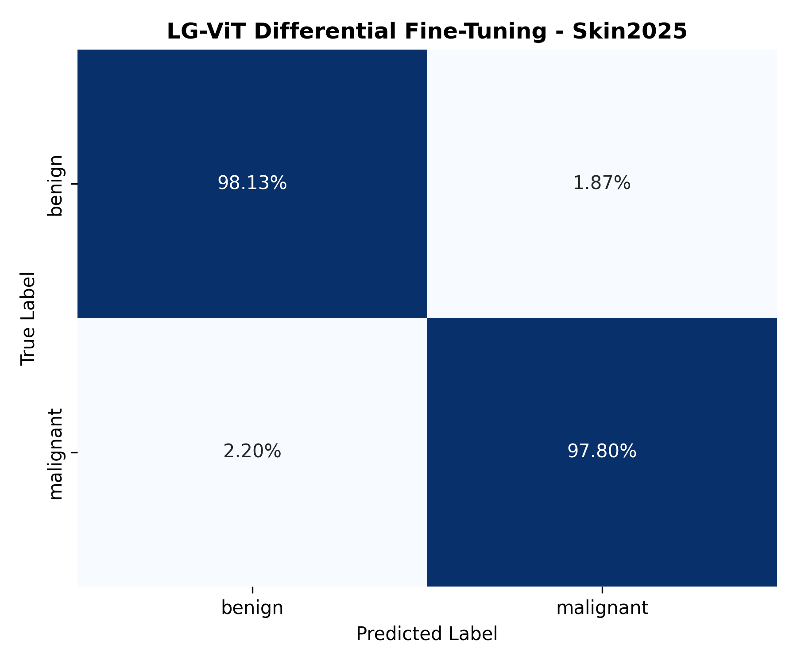
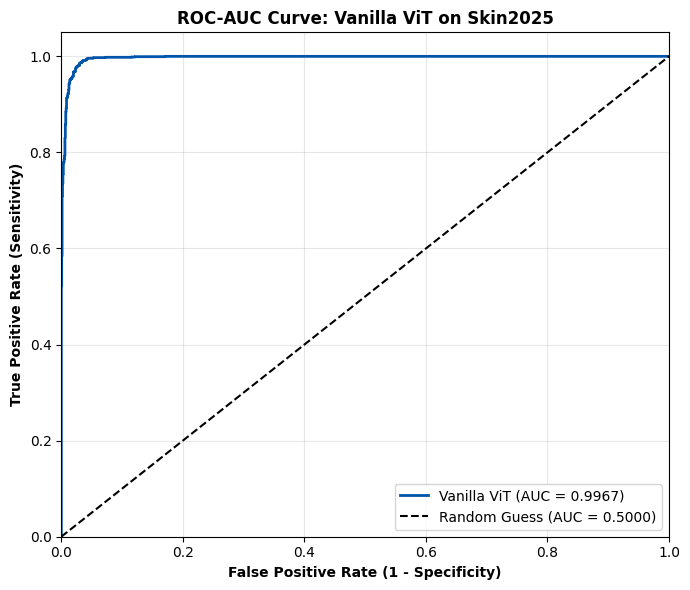
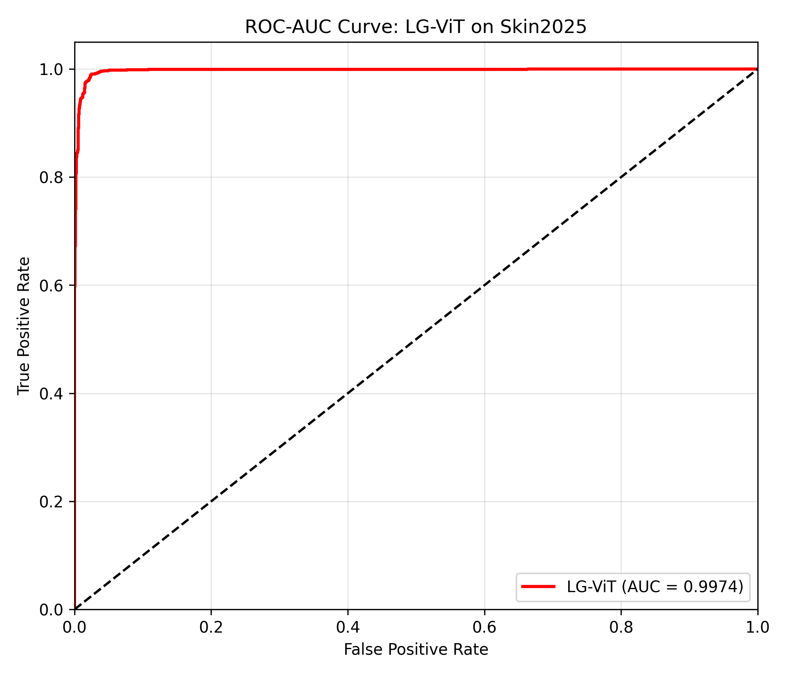
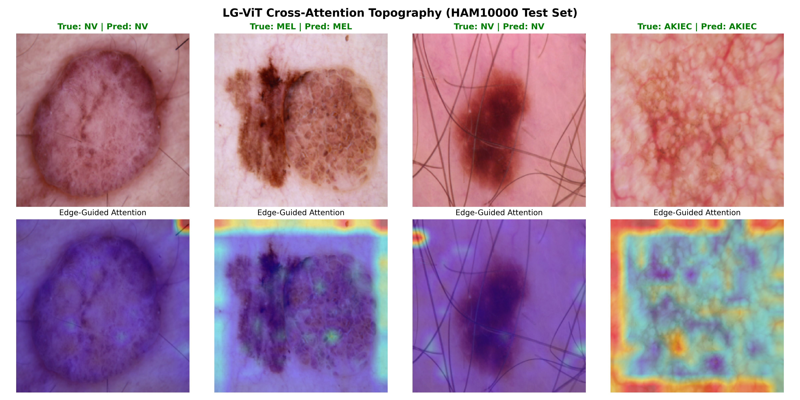
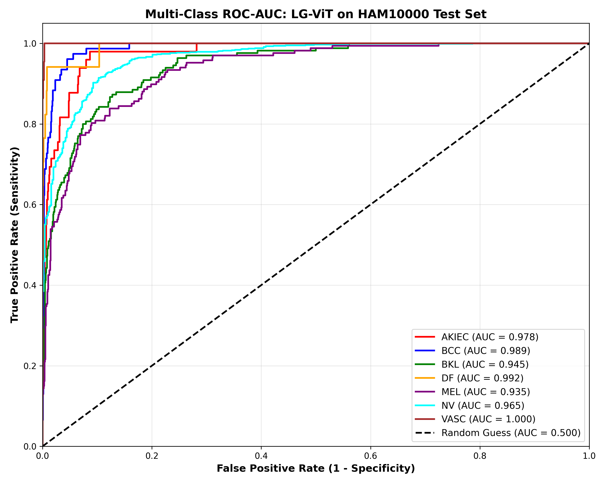
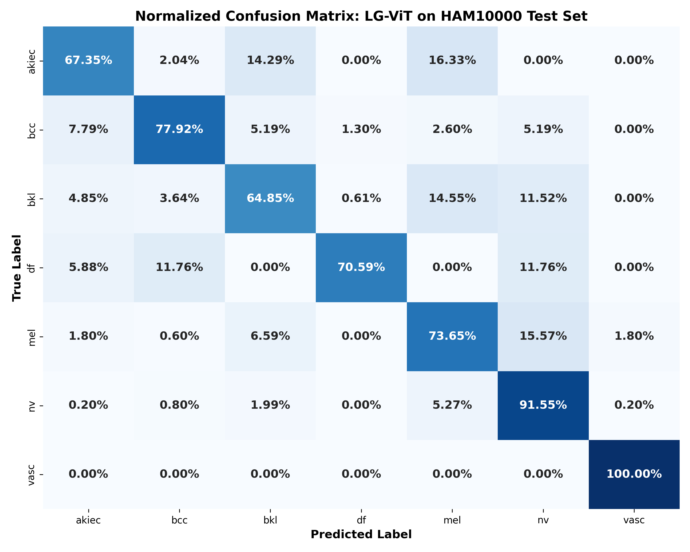

Last Updated: Monday, August 17, 2026
Phase 7: Skin2025 Large-Scale Benchmark & Differential Fine-Tuning
Evaluated on the 20,000-image Skin2025 dataset using a strictly stratified 70/15/15 blind split. Introduced Fine-Tune V1, utilizing layer-wise differential learning rates (1e-5 backbone / 3e-4 custom head), Cosine Annealing, and Mixed Precision (AMP) to prevent catastrophic forgetting in the pretrained ViT layers while rapidly converging the Laplacian cross-attention stream.
| Model Architecture |
Training Strategy |
Test Acc |
Malignant Recall |
Benign Specificity |
Macro F1 |
| Vanilla ViT-Base (Baseline) |
Standard LR + AMP |
97.73% |
98.53% |
96.93% |
0.9773 |
| LG-ViT (Run 1) |
Uniform LR |
95.83% |
96.72% |
94.95% |
0.9583 |
| LG-ViT (Fine-Tune V1) |
Differential LR (1e-5 / 3e-4) |
Pending... |
Pending... |
Pending... |
Pending... |
Skin2025 Confusion Matrices
Vanilla ViT (Baseline)

LG-ViT (Fine-Tune V1)

Skin2025 ROC-AUC Performance


Phase 6: Multi-Domain Stratified Blind Benchmark & Explainability
Evaluated strictly on held-out test partitions (15%) across independent viral and neoplastic pathology benchmarks.
| Clinical Benchmark |
Blind Test Size |
Accuracy |
Macro F1 |
Macro ROC-AUC |
| MPox-Vision (Viral) |
120 Images |
97.50% |
0.9749 |
0.9867 |
| HAM10000 (Neoplastic) |
1,503 Images |
85.00% |
0.7700 |
0.9674 |
HAM10000 (Neoplasm) Metrics & Attention Topography
Demonstrates high sensitivity on malignancies with strict focus on lesion topography, safely ignoring skin pigmentation.



MPox-Vision (Viral) Metrics & Attention Topography
Achieved perfect precision on Monkeypox and Measles via explicit edge guidance.

Phase 5: Multi-Class Neoplasm Generalizability
Ablation evaluation across 10,015 dermoscopy images testing Square-Root Class Balancing.
| Variant |
Val Acc |
Macro Recall |
MEL Recall |
AKIEC Recall |
| Vanilla ViT (Baseline) |
86.00% |
0.76 |
0.67 |
0.55 |
| LG-ViT (Square-Root Balanced) |
83.67% |
0.77 |
0.69 (+14%) |
0.67 (+12%) |
Phase 3: Cross-Attention Fusion & Initial Training
Unified dual-stream architecture training logs.
Phase 2: Mathematical Edge-Extraction Stream
Engineered a dedicated morphological pathway using a 2nd-order differential Laplacian operator to extract high-frequency contour tokens.

Phase 1: Dataset Pipeline & Preprocessing Protocol
Established deterministic preprocessing, data loaders, stratified splits, and computational environment setup across all benchmark datasets for reproducible clinical modeling.
📊 Automated Clinical Dashboard Integration
System Status: Active & Ready for Deployment
The LG-ViT model has been packaged for deployment within an automated clinical decision-support dashboard designed for dermatologists.
- Inference Pipeline: Accepts raw dermoscopy uploads, applies deterministic normalization, and passes the tensor through the dual-stream architecture.
- Confidence Output: Returns Softmax probability arrays flagging high-risk neoplastic and viral profiles.
- Explainability View: Automatically renders side-by-side Laplacian Edge and Cross-Attention topography maps for physician verification, ensuring transparency in AI decision-making.